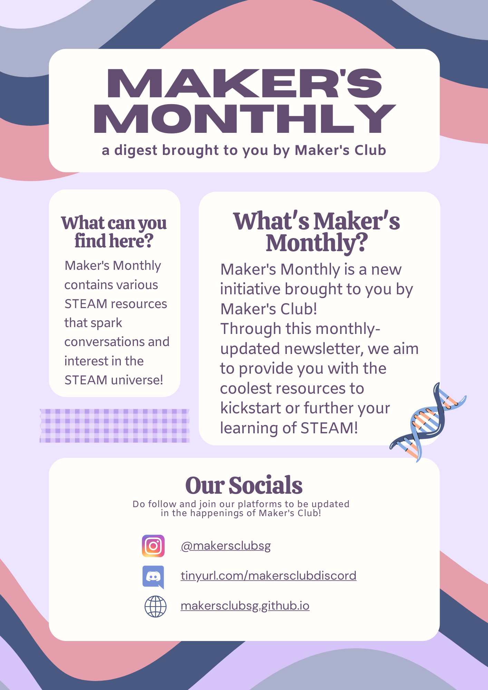
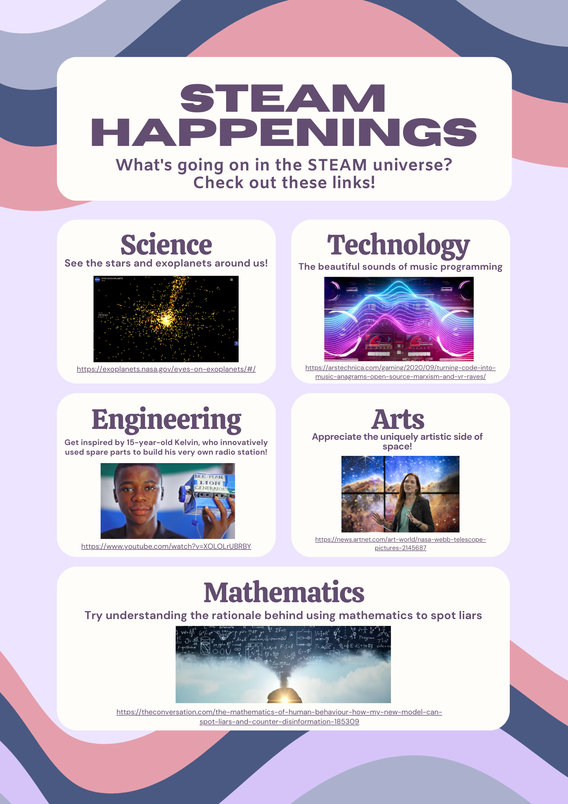
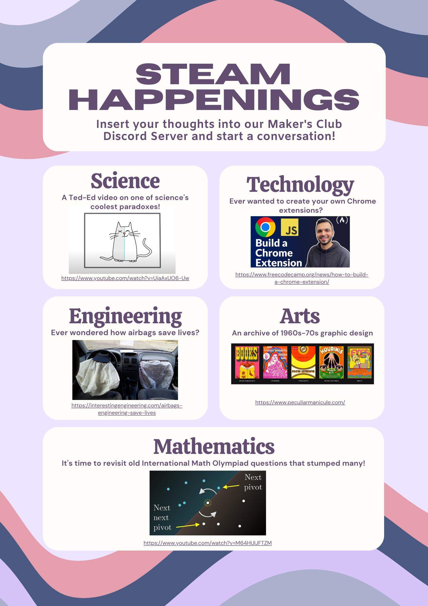
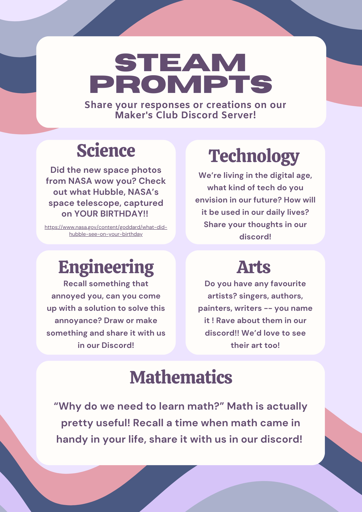
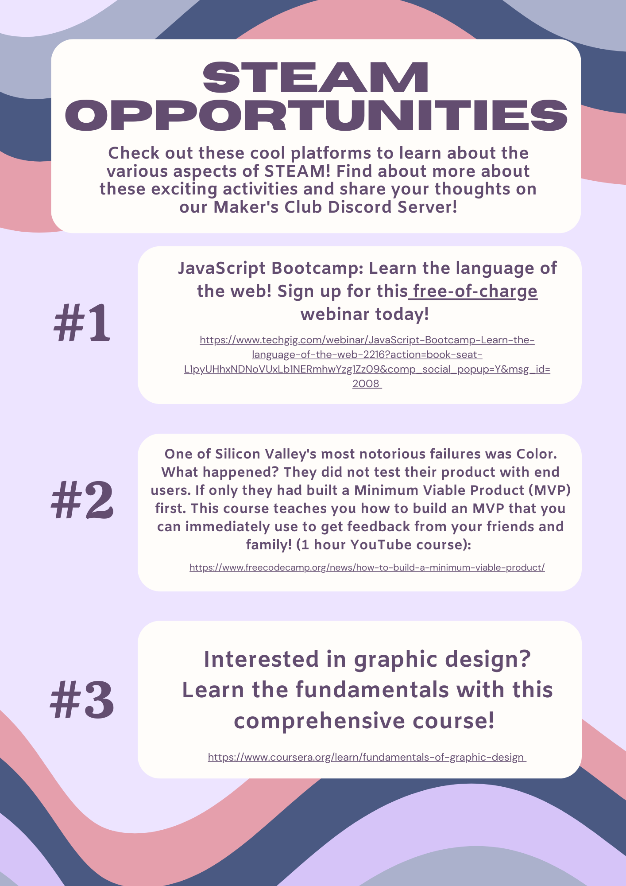

Maker's Monthly





Links
Science: See the stars and exoplanets around us!
Technology: The beautiful sounds of music programming
Arts: Appreciate the once in a lifetime artistic side of space!
Mathematics: Try understanding the rationale behind using mathematics to spot liars
Extra Resources
For more resources, check out our extra resources for August.